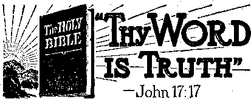

Contents
“No Murderer Hath Eternal Life”
“A Useless and Cruel Procedure”
Watchtower Bible College Graduates
Presenting “This Gospel of the Kingdom”
'“Thy Word Is Truth”
Locating the Radio Transmitter
Published every other Wednesday by WATCHTOWER BIBLE AND TRACT SOCIETY, INC.
117 Adams St,, Brooklyn 1, N. Y., U. S. A.
OFFICERS
President N. H. Knorr
Secretary W. E. Van Atnburgh
Editor Clayton J. Woodworth
Five Cents a Copy
JI a year in the United States JI. 25 to Canada and all other countries
NOTICE TO SUBSCRIBERS
Remittances: For your own safety, remit by postal or express money order. When coin or currency is lost in the ordinary malls, there is no redress. Remittances from countries other than those named below may be made to the Brooklyn office, but only by International postal money order.
Receipt of a new or renewal subscription will be acknowledged only when requested. Notice of Expiration is sent with the journal one month before subscription expires. Please renew promptly to avoid loss of copies. Send change of address direct to us rather than to the post office. Your request should reach us at least two weeks before the date of issue with which it is to take effect. Send your old as well as the new address. Copies will not be forwarded by the poet office to your hew address unless extra postage is provided by you. Published also in Greek, Portuguese, Spanish, and Ukrainian.
OFFICES FOR OTHER COUNTRIES
England 34 Craven Terrace, London, W. 2
Australia 2 Homebush Rd.. Stratbfield, N, S. W. South Africa 623 Boston House, Cape Town
Mexico Calzada Melchor Ocampo 71. Mexico, D. F. Brazil Rua Licfnio Cardoso 330, Rio de Janeiro
Argentina Calle Honduras 5646-48, Buenos Aires
Entered as second-class matter at Brooklyn, N. T., under the Act of March 2, 1879.
The Best Mothers Don’t Lie to Their Little Ones '
♦ We have been subscribers for Consolation for a year now, and have thoroughly enjoyed its contents. Your editorial “The Santa Claus Racket” struck a responsive chord. It is something I have been saying for years. Why do parents feel that they must lie to children about a mythical character, when all they have to do is to open their Bibles and read to them the facts of the birth of our Savior, Jesus Christ?
Perhaps the reason I feel so strongly is because, as a child, I was so completely taken in, believing so in my beloved Santa Claus that when 'iny parents told me the truth, that there was no Santa, I was actually ill for days, and even though now I am nearing middle age, I still get a sick feeling around the Christmas season.
Oh, I was informed by smarter and older children that there wasn’t a Santa, but I stoutly maintained that if there wasn’t my parents wouldn’t have told me there was.
I have always declared that if the Lord blessed me with children I would never lie about any of the things most parents lie about, Santa, the Easter bunny, the stork, etc. I realize that there are things that cannot be explained to a child, that explanations must wait years, but the things that can be told should be told truthfully.
Many’s the time I’ve been punished for lying about the elves, what the dog said, yet the biggest lie of all time was rammed down my throat and I was supposed to love my parents for it, for their being so considerate of my feelings.; Sometimes I wonder our children believe anything we tell them.
So thank you again for the article, and also for your fine 'Consolation. Indeed “the truth shall make you free”.—Jo Kane, Georgia.
“And in His name shall the nations hope.”—Matthew 12:21, A.S. V.
Volume XXVI Brooklyn, N. Y., Wednesday, March 28, 1945 Number 668
A Little Study in Bigotry
THE Roman Catholic Register carried a picture of John Henry Cowles, sovereign grand commander of the supreme council of the thfrty-third degree, Scottish rite of Freemasonry, Southern Jurisdiction, and gave the picture and the accompanying story the general title “Worst Bigot in U. S.” Knowing that the pope has referred to the Catholic press as being his “very own voice”, the subject calls for investigation. It seems that Cowles’ particular offense consisted in saying of Pope Pius XII that he “is as thick as three in a bed with Hitler and Mussolini” (which is the truth); and also he did not think well of the archbishop of Malaga who, on a single day, had twelve Spanish Masbns garroted.
Before going into some details on the subject, it should be explained that it is perfectly all right for the Roman Catholic Hierarchy to advertise, even in America, that if they had the power to do it they would murder everybody not of their own peculiar sect. But when anybody like Cowles objects to it, then he is the worst bigot in the country.
The Crusades were murder campaigns. When their menfolk did not return, thousands of their wives and orphans formed beguines, where they worked hard to support themselves, help the poor and care for the sick. In time these lay communities, sometimes as many as 2,000 in one community, became important factors in the cities where they were located. Deterioration set in; they dressed in black; they worked in pairs; they followed the example of the friars and became mendicants; and so the feminine bigotes, as the members of the religious sisterhoods were called, came to be considered religious hypocrites, and beguigners were considered and called beggars and bigots. These words have a common origin. _ The Eneyclo-pcedia Britannica explains:
Bigot. One obstinately .and intolerantly holding particular opinions, generally reli- > gious. The early meaning of the word in English, at the end of the 16th century, was that of a religious hypocrite. It was applied in French, in the 1‘2th century, to certain tribes of southern Gaul, and, in an abusive sense, to the Normans. The meaning changed in French to that of “religious hypocrite” through the application, in the feminine bigot e, to the members of the religious sisterhoods called Beguines.
Spellman’s Well-timed Warning
In the same month in which the Register denounced Mr. Cowles as the “Worst Bigot in LT. S.” the St. Louis PosEBispateli carried a review of an article by Archbishop Spellman in the American Magazine in which that gentleman said:
With all my heart, T deplore the growth of the cancer of bigotry penetrating American life, shriveling America’s heart, retarding America’s victory and peace. For bigotry undermines the fundamental .principles avowed in the Declaration of Independence, the Constitution and the Bill of Rights.
Mr. Spellman is dead right about that, and so it. is very unfortunate for him that in his own archdiocese, on the last page of The Parish Bulletin, put out by the
Holy Rosary Church (Italian), 444 East 119th street, New York city, occurs the following, first in Italian and then in English: '
Warning. It is our duty to warn our parishioners that it is absolutely forbidden, UNDER PAIN OF MORTAL SIN AND POSSIBLY excommunication, to frequent so-called “e hit pels” or “churches’”’ that are not Catholic, 'Apostolic, Roman, under the direction of His Excellency Francis J. Spellman, D.D., Archbishop of New York. Take notice, too, that no one has been authorized by this church to ^Oj.about amongst the parishioners collecting funds or selling religious articles, The Roman Catholic Apostolic churches in this neighborhood, between 104th and 129th streets, from Park Avenue to the East River, under the jurisdiction of His Excellency Francis J. Spellman, Archbishop of New York, are the following: [then -follows the list of nine such, with addresses]. -
Can anybody recall any place in the Scriptures where it says that His Excellency Jesus Christ or His Excellency Simon Peter ever did such a thing as that? But, then, of course, Jesus was but a carpenter and Peter but a fisherman, and neither had a D.D. degree, as has Francis J. Spellman. 1
Spellman’s Idea of a Bigot
Mr. Spellman bursts into the press every chance he gets, and that is real often. For instance, though he is in long-distance telephone communication every day, that would not give him any publicity, so when he sends a long and expensive cablegram to the pope congratulating him on his 68th birthday, it gets into the papers, as a matter of1 course. It helps to advertise what he thinks is the Catholic, Apostolic, Roman .faith, and that one he thinks is the best of the whole 256 doing business here in America. This is a free country, and if he wishes to think that, it is litis own affair. But wait:
The St. Louis Globe-Democrat carried a column about Mr. Spellman and his apparent accord with the “four freedoms”, in which column occurred this statement by the “Reverend Father” W. Eugene Shiels, Jesuit, and which shows plainly that Shiels, at least, still has the blood of the Inquisition and the auto-da-fe yet boiling in his veins:
Religious liberty is one thing, broad religious activity quite another. Every state must preserve the true religion; so, too, every state must respect the right of religious liberty. But not every state must allow the broadest religious activity. Take the country where almost everyone professes the same religion. In such a territory the government must protect the public peace. And government may have the duty of putting limits on the activities of people holding other religious ideas, to preserve the peace, to preserve the right of religious freedom against assault. This every government must do.
Mr. Shiels would be benefited by soaking his head, to reduce the swelling.
The Bigotry of Yesteryear
The following is a translation of the Edict of 1550, under Philip the Catholic, taken from page 81 of The Rise of the Dutch Republic, by John Lothrop Motley:
No one shall print, write, copy, keep, conceal, sell or buy, or give in churches, streets, or other places, any book or writings of Martin Luther, John Ecolampadius, Ulrich Quinglins, Martin Bucer, John Calvin, or other heretics reprobated by the holy church, nor break or otherwise injure the images of the holy virgin or canonized saint; nor in his home hold conventicles or illegal gatherings, or be present at any such in which the adherents of the above-mentioned heretics teach, baptize and form conspiracies against the holy church and the general welfare.
Moreover, we forbid all lay persons to converse or dispute concerning the Holy Scriptures, openly or secretly, especially on any doubtful or difficult matters, or to read, teach, or expound the Scriptures, unless they have duly studied theology and been approved by some renowned university; or preach secretly or openly, or to entertain any of the opinions of the above-mentioned heretics; on pain, should* any one be found to have contrived any of the points above mentioned, as perturb atorsof' our state and of the general welfare; of being punished. That such perturba-tors of the general quiet are to be executed, to wit, the men with the sword, and the women to be buried alive, if they do persist in their errors. If they do persist in them then they are to be executed with fire; all their property in: both eases being confiscated to the crown. If any man being present at any secret conventicle shall afterward come forward and betray' his fellow members of the congregation, he shall receive full pardon.
Ireland Always a Sore Place
Ireland is always a sore place, and always will be so, as long as the Roman Catholic Hierarchy exists; for it so happens that in Ulster there are some true liberty-lovers. The following are a few brief extracts from The English in Ireland in the Eighteenth Century, by James Anthony Fronde:
Rallying from their first surprise, the Protestants gathered into bodies and made flight; and from that moment the conduct of the rebellion fell entirely into the hands of the most violent. Charlcmont Castle, the strongest fortress in Ulster, was surprised on the fatal 23rd of October [1641] by Sir Phelim O’Neill. Lord Caulfield, who was taken there, was afterward murdered . . . Savage creatures of both sexes, yelping in chorus, and brandishing their skenes; boys practising their young hands in stabbing and torturing English children—these were the scenes which were witnessed daily through all parts of Ulster. . . . [Page 106]
In the first horror, it was said that 200,000 persons perished in six . months. For these enormous figures the Catholic priests were responsible. They returned the numbers of the killed in their several parishes up to March, 1642, as 154,000. [Page 111]
Referring to the same events, the “Very Reverend" Richard Murray, D.D.,
dean of Ardagh, in his book Ireland and Her Church', says, at page 262: ' '
Roger Moore and Sir Phelim O’Neill (the most powerful of the old Irish) now resolved upon a general massacre of all the Protestants in the kingdom. Their houses, cattle, and goods were first seized. After rapacity had fully exerted itself, cruelty, and that the most barbarous that ever was known or heard of in any nation, began its operations. No age, no sex, no condition was spared. The wife weep-? ing for her murdered husband and embracing her helpless children, was stabbed with them, and perished by the same undistinguishing stroke. The old, the young, the vigorous, the infirm, underwent the like fate, and were confounded in one common ruin.
As showing how Ulster feels about the Roman Catholic Hierarchy to this very day, the Roman Catholic Register carried a dispatch from Dublin that in Northern Ireland there has been organized a new oath-bound organization called the Protestant Action Society of Great Britain and Ireland, whose avowed purposes are to fight and counteract Roman Catholic action and demand forthright the removal of all Catholics from government key positions. Ulster remembers the bigotry of the past.
In Spain, Mexico, and South America
Occasional stories get into the papers which indicate a lessening of sectarian spirit. For instance, there is the story of the Protestant minister that helped a Catholic priest build hi's chapel, and of the Jewish artist that decorated it as follows: ' ■
With a background of the Stars and Stripes, Christ stands with outstretched arms. On the right panel is the Blessed Virgin Mary in blue with a pilot kneeling before her, and on the other side is St. Barbara, the patroness of gunners, with a gunner on his knees asking her help.
Another item in the same class is that of the 300 Y.M.C.A, boys in the great Public Hall, Cleveland, Ohio, who, in the darkness, and wearing red capes
and >'bearing candles, stood before an altar and a cross. Such boys, having marched that far toward Boman Catholic pageantry, would be helped to get the idea that all religions are, after all, much alike, and that they might as well become Roman Catholics as anything r else.
f But if any of those Y.M.C.A. boys Should decide that they wish to become priests, you can imagine how they will feel when they get to Rome, and have ■ put in their hands Father Lepicia’s textbook Concerning the Stability and .Progress of Dogma, and run across this question and answer, on page 193:
Q. Can heretics be tolerated, and if so, on what conditions?
A. As soon as one proclaims in public a heretical doctrine, and tries to corrupt others by words or example, he cannot only be excommunicated (to speak abstractly), but he ought to be killed, in all justice, to the end that he may not corrupt a very great number by contamination. For a bad man is worse than a wild beast, and he does more. As Aristotle.says (Ethics I, vii in fine). So as it is not evil to kill a noxious beast of the forest, it is good to take away the life of a heretic who denies divine truth and hinders the salvation of others.
Conditions are now so bad in Spain, as a result of this theology that Spellman and Shiels were taught, that, in the words of a contemporary,
Even if a Christian is found only discussing the Bible with other Christians, though he says nothing against the government or the Roman Catholic Hierarchy, he is heavily fined and imprisoned, sometimes beaten.
In Argentina Catholic religious' instruction has been imposed upon the public schools; teachers and pupils are obliged to attend religious ceremonies of that church; and conscripted men in the army are punished for not confessing the Catholic religion. And people who are not bigots just don’t like this form of bigotry rammed down their necks.
Jehovah’s witnesses in Mexico
The Roman Catholic Hierarchy well know who are the people that make the most determined stand for God’s Word, Jehovah’s witnesses, and at the time of the United Announcers’ Theocratic Assembly centering at Buffalo, on August 9-13, they were alarmed that the witnesses had the same legal rights in Mexico as any other law-abiding organization. All the principal Catholic papers in the United States had a column, or more than a column, starting out with the following:
Mexico City--(NC)—-The use of the official Hidalgo theater, a dependency of the Ministry of Public Education, for a Sunday meeting of the "Watchtower Bible and Tract Society (Jehovah’s witnesses) has caused considerable comment here in Mexico where the principle of separation of Church and State customarily is carried to extremes in application, and where the Constitution requires that “every religious act of public worship shall be performed strictly within the places of public worship”. For days before the meeting at which N. H. Knorr, president of the Society, was to speak, Thousands of handbills were distributed urging attendance, and "sandwich women” as well as men paraded through the principal avenues of the Capital advertising the event.
When this story appeared in the Catholic Transcript, Hartford, Conn., it had a searehead three columns wide "Jehovah Witnesses Given Privilege in Mexico That' Law Denies to Catholics”. It omitted to explain that the witnesses kept absolutely within the letter and the spirit of the Mexican law.
When it appeared in the West Virginia edition of The Register it also had a head three columns wide entitled “Mexican Press Opens Fire on Use of U. S. Sects to Arouse Anti-Catholics”. But when you read the story you find that the ones that are attacked in the Mexican press are not Jehovah’s witnesses, who conducted themselves with perfect legality and.decorum, but the Sinarchists:
. . . because their activities were or are ‘a factor of intranquillity, arousing vigorous reactions by antagonistic groups1.
That’s rich—blaming a law-abiding. organization because of the misconduct of a Roman Catholic prganization that tried to kill Mexico’s president, but did not succeed. Talk about peanut-minded bigotry I
When the story reached the Providence Visitor it received a two-column heading entitled “Jehovah’s Witnesses Use Official Mexico Theatre; Protestant Efforts Viewed by Voters in Capital as Disturbing Note in Nation—Protests Being Filed". And also, when you read the story, you find that the voters who are alleged to have been disturbed were not at all affected by the meetings of Jehovah’s witnesses but that it had reference to the Sinarchists. This is not honest Catholic newspaper work. There is no such thing, > It is just beastly narrow-minded bigotry.
THAT statement was not made recently. It is a part of 1 John 3:15, and so it was made a good while ago; but it is still the truth. The immediate reason it is quoted is wonderment of what became of the priest Cordier who appointed Bonnier de la Chapelle to kill Admiral Francois Jean Darlan. Thq two latter died, but what about the real murderer, Cordier? Does he still live, and if so, why? '
Denials have been made that the Mas-i sacre of St. Bartholomew was a church affair, but as late as 1898, at the very entrance of the Sistine chapel, was the hideous picture of the massacre itself, and every time the pope went to mass he had to see it, and there were other pictures connected with the same event. When the news of the massacre reached Rome the cardinals and the pope attended a Te Deum in the nearest church and the city was illuminated for three nights.
In the fall of 1943 the present pope broadcast a message to the bishops of Peru in which he said to them: “You have retained your fidelity to the inheritance of faith which was brought to you by Pizarro.” This Pizarro is the man who entered into a contract with the Inca Atahualpa to give him his liberty if he would raise $15,000,000 in gold and silver within two months. The Inca did it, and Pizarro thereupon had him gar-roted; and on his deathbed he wrote to the king of Spain that when he and his men came into the land the men and women were all honest and industrious, locks were unnecessary and crime was practically unknown. He said, “We have destroyed this people by our bad examples.” Pizarro was one of the top murderers of an age of such men.
' . J
NS, Hanoks, M.D., 300 West 42nd
• St., New York, N.Y., had _ the nobility and the courage to say, in a letter dated November 17,1941:
I am opposed to vivisection because it is a useless and cruel procedure, as well as a blot on an otherwise noble profession. There is plenty of evidence that it has been a factor in multiplying degenerative and mental diseases and increasing the number of hospitals and sanitoria. Most vivisectors are sadists and monomaniacs and better suited for executioners than practitioners of the noble art of healing. Disease can never be cured by torturing animals or injecting serum made from animals into the human blood stream.

Left to right: First Row: Erashier, M., Trabert, E., Grell, E.T Bippus, R., Miller, R., Geisclman, A., Kaminski, A., Kienitz,- G., Cum-p mings, J., Lang, A., Peterson, F., Firtli, W,, TtircUo, J., Perna,, F.
□ Second Row; Gayhart, F., Mahan, E., Morgan, E., Hellen, R., Seelye, M., Lunstrum, F., Djrioba, J,, Maples, D,, Baxley, R., Mac-
2 gregorT I., Van Zandt, L., Rogers, H, Pemberton, W., Dure 11, B., Karshens, T., Willbanks, D., Lopez, E,, Vartanian, K,
(p Third Rowr Adams, L., Drdge, N., Parson, A., Red, A., Baker, O., Schihinger, F., K-ingensmil.h, M., Munfiterman, M., Campbell, J., Ward, D.T
O Kadlechlck, E., Adams, N,, Bourne, IL, Casey, B., Televiak, F., Smith, D., Hultquigt, T., Anderson, A., lIongell,<H,
F Fourth Row: Messick, ML, Lund, V., Koekebackcr, II., Maples, L., Bee die, CM Johnson, II Maki, G., Televiak, M., Perna, II., Kern, R„
Glass, K., Grell, L,, Messick, S., Lawrence, D., Kockebaeker, M., Mai, 11, Oison, M., Campbell, IL, Messick, F.
j Fifth Row; K Jen it*, W., Lang, A., Bagley, C., Mal, S.T Rupp, H,, Klingensmith, C„ Bourne, D,, Durcll, E., Powers, A., Pemberton, W.,
O Brashier, W., Peterson, C., Fapadcm, G., Drogo, G,, Schillinger, W., Flint, R., Bourne, A., Whiitner. F., Red, D,, Mahan, L.. Amaya, C., Z Seeiye, A., Geisclman, W., George, IL, Ciarcia, S., Duffield, H.,' Munsterman, D. .
IT DOES not seem so long ago that Consolation had the pleasure; bf reporting the graduation of the first class from the Watchtower Bible College of Gilead, at South Lansing, N.Y. Now the fourth group of some one hundred full-time ordained ministers have completed five months of intensive training at this Bible college and have scattered to widely separated fields to take up anew the full-time work of gospelpreaching. January 22,1945, was graduation day.
.. The exercises were appropriately opened by united singing of the rousing Kingdom service song, “Take Sides with Jehovah I” After prayer was offered to Jehovah God, the president of the college, N. H, Knorr, requested his secretary to read some of the many messages received. Many of these were from members of previous graduating classes, and some of them were in Spanish, the language taught at the college to equip the ministers for work in foreign fields. One of these read: Salutaciones, cuarta clase de Galaad y facul-tad;
En este dfa de graduacion estamos eon ustedes en el espiritu, aunque no en el cuerpo. Queremos para ustedes las bendiciones de Jehova en el eampo de reconstruccion.
Tereera elase de Galaaditas, Deming, New Mexico.
Translated, the message reads: “Greetings, fourth class of Gilead and faculty: On this graduation day we are with you in spirit, although not in body. We wish Jehovah’s blessings for you in the field xof reconstruction. Third class Gileadites,
Deming, New Mexico.”
The messages read showed the unity of spirit prevailing among all those graduating from the'Bible college, and also the keen interest taken by others of Jehovah’s witnesses in the work being done by the college. Following heart-to-heart talks of counsel and appreciation
MARCH 28, 1948 from each of the four instructors and the servant in charge of Kingdom Farms, on whose rolling acres the Bible ■college is located, the principal discourse was presented by 'the college president. The subject, “Your Reasonable Service,” was timely admonition for the departing ministers. Diplomas were next presented to those who had completed the prescribed course of study with merit. One hundred were enrolled August 28, 1944, and of this number ninety-seven graduated. However, only ninety-three of these received diplomas, indicating completion of the course with merit.
After all diplomas had been distributed a member of the graduating class came forward and offered an excellent resolution on behalf of the class; and that resolution is herewith presented.
RESOLUTION
Whereas we appreciate the blessed privilege of attending the Watchtower Bible College of Gilead and the great reconstruction work that Jehovah God has commanded through his Word shall be done in the earth at this time and for which purpose the Watchtower Bible College of Gilead was established; and
Whereas we rejoice and give praise to God that by accepting this added blessing we will be able to prove ourselves more able ministers unto Him by knowing how to wield more effectively the Sword of the Spirit to the glory of God’s name and to the consternation and chqgrin of the religious element of Satan’s organization and to the ever-increasing joy and hope of those of good-will toward God and his Kingdom; and ■
Whereas we are about to leave for foreign lands to carry the glorious message to the oppressed and downtrodden; and
Whereas we realize the many trials ahead, the privations, the hardships, and the bitter opposition of the demon hosts, both visible and invisible, which await us;
* 9
Therefore, be it resolved: That we will preach the gospel of the Kingdom in whatever territory we may be sent to and carry out the instructions given us through, the “faithful and wise servant”, the Society, to' the furthering of the Kingdom interests and-to the praise and honor of God’s name;
, That we shall endeavor to put into operation all the knowledge gained from the course it Gilead as well as the good daily habits " formed, that we may redeem the time to the glory of Jehovah;
' That we will try to live in unity with one another, to have oneness of mind and purpose, to put aside all selfishness and thereby “seek first the Kingdom” in order to accomplish the work set before us.
That we will develop a long-life perspective, knowing that our life, begun with our consecration, can continue through countless millenniums into eternity;
That in the face of eternity the remaining years until Armageddon will seem but a brief span that will be brightened by the conviction that only a knowledge of the truth can bring;
That we shall continue faithfully in the strength of Jehovah’s active force or spirit to publish the message “The Kingdom is at hand^ to all peoples that the “stranger” class may not be deprived of its rights in hearing this message and receiving protection at God’s hand from the coming world destruction and be ushered into life in the New World;
That we take our new and increased responsibilities joyfully, gratefully, and prayerfully, rejoicing in the small part we have been assigned as individuals in proving the Devil’s boasts to be lies, and Jehovah to be supreme, so that in maintaining our integrity we may be privileged to hear the vindicated Ruler of the universe proclaim, “Well done, thou good and faithful Servant.”
It was unanimously adopted by the fourth class of Gilead students. Song and prayer then closed the graduation exercises. These occasions are long remembered by the graduates of Gilead. This is shown by a letter received from a member of the third class, reading, in part:
Greetings, Gilead graduates of the fourth class,:
A little homesickness creeps over me as I think of all of you now ready to leave home. Gilead is my home, your home; it will always be our home. As you take your seat before the exercises commence you feel assured that Gilead has done much to prepare you for future sendee, here and abroad. Your eyes are wet as you take a glance to the left, then one to the right, then over your shoulder, last glances at your dear associates whom you have met from all parts of the United States, yea, and even Mexico. You have studied with them, worked with them, and loved them. There is a Jump in your throat as you look over at the instructors who have labored all term with you. It is a happy occasion, and a sad one. r
Then, before you know it, it is all over. You have your diploma, report card, class picture, and a territory assignment. Soon you’ll be out in the hostile old world again. But be assured, brethren, as you leave Gilead behind Jehovah’s active force will go with you. You leave Gilead with the conviction that now you will work harder than ever to show the Lord how much you appreciate the special training he has provided for you. Some day we may all go back home, to Gilead; if not before the battle, then after the smoke clears away. Gilead was built in a time of war, and by the Lord’s grace it will stand through the next war, Armageddon. All other buildings, churches and colleges, will come tumbling down, to be covered and forgotten. But there will always be a Gilead!
Probably Back on the Pay Roll
♦ The Associated Press, in a dispatch from Moscow, says that Acting Patriarch Alexeis wrote a letter to Premier * Stalin addressing him as “Our dear supreme leader whom God has sent us”. Alexeis probably figures that by now “God” will have fdrgotten about those cotton saints, and that being, by now, probably back on the pay roll, it is only decent for him to show his gratitude to “the god of this world”.
The Greek Language
(In Three Parts—Part Two)
THE international usage of the Greek language throughout the realms of the Roman Empire and even outside thereof during the first century A.D, helps us today to understand some surprising things. Readers of the book "The Truth Shall Make You Free’ will remember reading on page 209, paragraph 1 thereof, this ' statement: “As J ehovah commanded the writing of the canonical Hebrew Scriptures, so he commanded the writing of the sacred Scriptures in Greek by the apostles and disciples of Jesus Christ.” That statement may be disputed by persons who argue that the Christian Scriptures were originally written in the Aramaic, the common language of the1 Jews of Palestine in Christ’s day. Nevertheless, the fact that, with the possible exception of the gospel of Matthew, the Scriptures written by Jesus’ disciples were written in Greek is corroborated by even those who deal with the Syriac language, which is _ a close relative to the ancient Aramaic. Anyone turning to the introduction of Murdock’s translation of the Syriac “New Testament” and reading from page 34, paragraph 2, to page 36, will find testimony, and by those working with the Syriac language, that the Christian Scriptures were written originally in Greek, with the one exception of Matthew. Matthew’s gospel was first written in Hebrew, but then it was finally translated by Matthew himself into Greek. The evidence, therefore, seems to be convincing that God, who by His spirit enabled His servants to speak' with foreign tongues, commanded that these Christian Scriptures be written in Greek. There was a very valid reason for His desiring it to be so. The Lord Jesus. Christ declared to His disciples that the gospel of the Kingdom was not to be confined to that area of Palestine occupied by the Aramaic-speaking Jews, but, before leaving His disciples and ascending into the heavens, He said: “Go, disciple all the nations, immersing them into the name of the Father, and of the Son, and of the holy spirit; teaching them to observe all things which I have enjoined upon you.”—Matthew 28:19, 20, Emphatic Diaglott.
It would therefore be reasonable and most convenient that in the spreading of the gospel the Lord Jehovah should provide that the gospels, the epistles, and the Apocalypse, or Revelation, should be written in a language that would have the widest understanding by the populations of all this indicated vast area. Inasmuch as: Greek was a world language, and the koine Greek was the language of the man of the street, it would be very appropriate that the original Christian Scriptures should be written in that medium of speech and communication. Why? Because then it could have a universal understanding and be appreciated directly by all these people over this wide territory who spoke that international language. Jehovah God foresaw the development of the Greek tongue, and just at the right time it had a universal sway and the language was there ready to hand. So He inspired His servants on earth to make use of this convenient lingual instrument.
For centuries the Roman Catholic sect or cult has carried on its services largely in the Latin tongue. It gives preeminence to Latin and would have the people in general draw the conclusion that Christ Jesus, the Stone on which the Christian church is really built, favored Latin, and that Almighty God expressed a preference for the Latin language, and that Latin should therefore be the means by which the Roman Catholic services of the mass, etc., should be officially carried out throughout all ages. However, when we examine into the termi-
MARCH 2B, 1945
11
nology used in the Catholic sect, we see that this Latinized Roman Catholic cult and hierarchy have a Greek-language basis. For instance, take the name of the one whom they claim as their first pope; his name Peter (Feird.s-), meaning “a stone”, is Greek. If one takes the Bible '■that the Roman Catholic Hierarchy 'authorize, the English Douay Version, one finds that the names therein of the various Bible characters and places are for the most part different from those found in the King James? Version or other non-Catholic versions. Yes, too, the very names of the books of the Bible are different in many respects. And why is this? It is because the Roman Catholic Bible follows the Greek form of the names; the non-Catholic Bible follows the Hebrew original. For example, Esdras, Osee, Abdias, Sophonias, Ag-geus, Malachias, Apocalypse, etc., in the Douay Version, to compare with Ezra, Hosea, Obadiah, Zephaniah, Haggai, Malachi, Revelation, etc., in the King James Version. Their early Latin translations were made from the Greek Sep-tuagint and Greek Christian Scriptures, and, of course, they took over the Greek rendition of the various names found in the Bible.
Furthermore, the names which are prominent in the rituals, ceremonies, and doctrines of the Roman Catholic cult are all Grecian in origin. Some of these terms are: Eucharist; bishop and archbishop ; Catholic; diocese; catechism; Hierarchy; liturgy; acolyte; presbyter; deacon and archdeacon; diaconate; church; patriarch; synod; ecumenical; encyclical; monk (monaclws); parochial; theology; and pope or papa (Greek: irdjuta;). The Roman Catholics try to justify their worship of Mary and of the “saints” canonized by the pope, and so they make a difference between grades of worship, called “latria” worship (to God), and “hyperdulia” worship (to Mary), and “dulia” worship (to saints); all of which words are Greek. Besides, there is that sign seen on .the vestments of the priests, ngmely, IHS. They claim those three letters stand for the first three letters of Jesus’ name in the Greek (IH2). This combination would therefore read “Yes”; which is the first syllable of the name “Yesoils”. But there ' are authorities who claim that the sign 1HS represents rather the Egyptian trinity of Isis, /Zorus and Neb, and has no relation to Jesus. All the foregoing facts argue that, if the Roman Catholic sect were apostolic and does not change, then if its ritual was to be fixed in any one language it should be the original Greek used by the first congregation at Rome.
In confirmation of this, take a look at the names of those claimed to be the first bishops of Rome. To begin with, Petros is Greek; and the apostle Peter wrote his two epistles of the Bible in Greek, the first epistle from his location at Babylon. Next come Linus (Atvo;) (2 Timothy 4:21); Cletus; Clement I; Anacletus; Evari stus; Alexander I; Xystus or Sixtus I; Telesphorus; Hyginus; Pius I; Anicetus; Soterus; Eleutherus; Victor I; Zephyrinus (A.D. 203).,With the exception of Clement (which might be Greek, as at Philippians 4: 3), and Pius, and Victor, all the foregoing names down to the beginning of the third century A.I). are Greek names. This predominance of Greek nomenclature is certainly indicative of something, not pro-Latin.
Features "
Now let us look at some of the features of the Greek language. As stated in Part I of this article, the Greek is the second-oldest of the seven or eight branches of the Indo-European family of languages. All branches of such family show a relationship to one another, and this particularly by the resemblance of their word forms. For instance: Pater is Greek; Vater is Ger-.
man; Pater is Latin; which mean “father” in , English. Likewise, meter (Gr.), mutter (Ger.), mater (Lat.), mother; hex (Gr.), sechs (Ger.), sex (Lat.), six; treis, drci, tres, three; thy-gater,------tochter, daughter; etc., etc.
Such languages would also show relationship by likeness in grammatical details. Of the ‘Indo-European family, the Sanskrit language of old India is the oldest member.
For a long while it was thought that Hebrew or Semitic had played a large part in the forming of the Greek language. Now this idea has been given up; for, aside from a few words that were embodied into the Greek together with the introduction of the objects which those Semitic names mean (for example, Ichiton, which means a “garment” or “tunic”), and also historic characters which appeared in the development of the history of the Hebrews, the Semitic language had little influence with respect to the Greek.
However, an inscription of the seventh century B.C. has been found which shows the Greek language of that preChristian period written in alphabetic characters that were derived distinctly from a Semitic source. Even today the relationship of the Greek alphabet to the Hebrew alphabet can readily be seen. There is foundation for believing that the Hebrew language was that spoken originally by man in the garden of Eden, and also by Noah and his three sons, including Japheth, from whom Javan and the Greeks descended. lienee, if the Greek was an offshoot of the Hebrew, it would, in spite of the confusion of tongues at the tower of Babel, be likely to show some relationship to the original Hebrew. Let the reader, therefore, take his copy of The Emphatic Diaglolt and turn to page 9 of the introductory material, and also open alongside his Bible at the 119th Psalm. The American Standard Version of the Bible is here preferable, because it gives both the Hebrew characters and the names thereof at Psalm 119. This Psalm is called a “Song of Degrees”, and the English Bible-lists the Hebrew character names ahead of each section of the psalm. This is because each section had every verse in it begin with this particular letter of the Hebrew alphabet; arid that is why the Hebrew letters are seen dividing up Psalm 119 into 22 sections.
Now, by shifting the eyes from the Diaglott to the sections of Psalm 11.9, . the reader can compare the Greek and the Hebrew alphabet, particularly as to names of characters and their values. The first letter in the Hebrew is aleph; in the Greek, alpha. Next, in Hebrew, is beth; in Greek, beta. The list of letters in a language we call the “alphabet”, which name is drawn from the Greek letters alpha and beta,- the Hebrews call it “aleph beth”. Then in alphabetic order come, in Hebrew, gimel, in Greek, gamma; daleth, delta; zayin, zeta. The Greek alphabet differed from the Hebrew in having letters or signs for vowels, whereas the ancient Hebrew had none, and hence there are no corresponding forms as to vowels in comparing the two alphabets. But in Hebrew there is than to correspond with the Greek theta (th sound) ; qoph and kappa; lamed and lambda; mem and mu; nun and nu; khaf and khi; peh and pi; resh and rho; sin (also shin) or samekh and sigma; tav and tau; pheh and phi; kheth and khi. The Hebrew had no I character to correspond with the Greek psi, but had the character he, whereas the Gr'eek had no letter for the h sound.
Not ‘Holy Ghostish’
For a long time the modern students of the Greek Scriptures thought them to be written in a language peculiar to theology, a sort of “holy ghost language”, a language invented by the “holy ghost” or holy spirit of God and adopted just for Christian circles. Contributing to this view was the fact that in Thayer’s
Greek-English Dictionary of 1896 there were listed more than 500 Greek words ■ that are used only in the “New Testament”, so called, and-in the Greek Septu-agint, which translates the ancient Hebrew Scriptures, and in the Greek Apocrypha, the apocryphal books having ',been written in Greek. These 500 words Included entirely new words as well as variations of commonly known Greek words, but are not to be found in classical Greek literature. The Greek Bible, ' and all literary compositions upon the sacred Scriptures during that period, used only the koine didlektos, or common dialect. During this koine period (330 B.C.-A.D.330) there were secular writers who wrote in a language similar to the koine Greek, such as Josephus (37-95 A.D.), and Philo Judaeus (A.D. 20-54), and Polybius (205-120 B.C.), but these tried to show somewhat more loftiness in style than the gospel writers, so as to approach more to the classical Attic dialect of the fourth and fifth centuries B.Q. Such writers were therefore called “Atticists”.
" However, as the scientists of archaeol-, ogy progressed in their findings of monuments of ancient days, and of the ostra-ca, and of papyrus manuscripts, a great amount of light was shed thereby upon the koine Greek as a language of actual historic usage. So it came that a Greek scholar named Robertson cites 186 words in the Greek Christian Scriptures which were formerly thought to be peculiar to such Christian writings and making an ecclesiastical language out of them. But now, by discovered inscriptions and papyrus manuscripts belonging to the koine period these 186 words are proved to have been in common usage among the general run of people of that period. This bears out that the language of the Christian Scriptures was not a special language invented by the holy spirit of God, but that in order to present the gospel message to the common people in general, the Christian Scriptures were recorded in the dengue that they used. That agreed with the fact that among those who were called of God by the “foolishness of preaching” there were not many wise, not many noble, not many rich, not many powerful or amounting to something in this world, but chiefly the poor, common folk, as stated at 1 Corinthians 1:26-29 and James 2:5.
After the Koine Period, there followed the Byzantine Period of the Greek, so called because of the influence of Byzantium or Constantinople, to which Emperor Constantine removed A.D. 330. The Byzantine Period continued till Constantinople’s fall to the Mohammedans in 1453, when the Modern Period began, which continues down to the present. The modern Greek period therefore began about the time of the inven-' tion of printing from movable type, which was in 1455.-Although modern Greek differs in many respects from the koine) it resembles the koine more so than the koine resembles the classical Greek of the fourth and fifth centuries ' B.C. Any reader can observe the difference between the modern Greek and the koine by procuring a modern Greek Bible and comparing it with the Gi;eek of The Emphatic Diaglott. But despite the differences, it is all Greek, Hence the modern Greek Bible is not a new translation, but is rather a revision of the original Greek Scriptures into the modern Greek idiom. In just the same way the King James Version was a revision of the English Bible produced by William Tyndale and his associates, and our. modern English and American translations are revisions of the King James Version Bible. But all are English Bibles.
It was the Greek scholar Erasmus who tried to restore the ancient pronunciation of the Greek, which differed from the pronunciation of Greek letters, diphthongs, and combinations by modern Greeks. Erasmus was . the one who brought out the first printed edition of
the Greek text in 1516, shortly before Luther began the Reformation movement. In Erasmus' third edition of 1523, as our readers will remember, he was induced because lof a promise he had made to insert into the Greek text the spurious verse at 1 John 5:7, to the effect that ‘there are three which bear testimony in heaven and these three are
one’. This Erasmus tried to revive the pronunciation of the Greek to the way it was spoken during the classical Greek period; and therefore that pronunciation was called the Erasmian pronunciation. That appears to be the traditional pronunciation which is taught in the English universities that still offer courses in ancient Greek. ■
MORMONISM made its appeal to the person perplexed by the many clashing sects that clamored too insistently for attention. It was, indeed, this. confusion of sects that led Smith to look for a “revelation”. In "Why I Am a ‘Mormon”' President Penrose of the Mormon Hierarchy explains:
The established churches, Episcopal and Greek, are but offshoots from the tree of Romanism, If the Romish Church is false and apostate, as they claim, their assumed authority is void; for what they have Came from that source, and that failing, they fail with it. Also, if the Romish Church retained the authority of the apostles, it held the power to loose as well as bind, and as it cuts them off, their channel of succession runs no farther back than the time of their disconnection. In either case, then, they have no apostolic or Episcopal authority. The Roman Catholic Church is dissimilar in body and spirit, in form and feature, in doctrine and discipline, in principle
and power from the Christian Apostolic Chureh. It has no apostles or prophets. It does not even claim to have present revelation— the great distinguishing feature of a divinely organized Chureh. Even if its assumption of an unbroken succession from St. Peter were true as to form, it is utterly lacking in the spirit and power that made Peter what he was, and the pope is not an apostle but professes to be a bishop. Leaving out of consideration the mummeries and mysticism, the heresies, and absurdities, the cruelties and horrors of mediaeval Catholicism, the Romish church bears no comparison with the organization established by Christ, as set forth in apostolic writings. And so whole “Christendom” from the Romish mother to her latest progeny, is man-made, without divine authority and about as powerless as to eternal salvation as the systems of religion in the so-called heathen world, all of which contain 'some truths, some admirable precepts, and many excellent men and women.
Occasionally a train goes through, on almost any through American railroad, and is loaded down with men that a little while ago were working for Hitler and were told that they must die for him. But they didn’t die, and, according to international law, they have come here to work for Uncle Sam at 80 cents a day. The day is hours long, with no work on Saturdays or Sundays.
The boys all look youthful; they are
MARCH 28, 1846 well-behaved, and are good workers. On Sundays they may wear their German uniforms, if they earn the privilege by good behavior. There is one guard for each eight prisoners; the guards must keep 15 feet away from the group, and they are not permitted to talk with prisoners. Few of the boys use tobacco; most of them prefer milk to beer, and they prefer calisthenics to competitive games; so the observers say.
AD, 33, certain disciples "believing
• and expecting that the world under Satan the Devil would end and that then the Messiah’s kingdom would succeed to authority approached their Master privately and propounded to Him this question: “Tell us, . . . what shall be the sign [the proof] of-thy coming, and of the end of the world1!”—Matthew 24:3.
Jesus, in answering the question, first, cautioned the disciples not to permit anyone to deceive them. He said to them, in substance : ‘There will be wars and rumors of wars before the end comes. Do not be disturbed about these, because the end is not yet.’ Then He stated to them what would be the first evidences or proof that the end of the Devil’s uninterrupted rule had been reached. He said: “For nation shall rise against nation, and kingdom against kingdom: and there shall be famines, and pestilences, and earthquakes, in divers places. All these are the beginning of sorrows.” —Matthew 24: 7, 8.
And now let us examine the physical facts and see how well, they fit the prophetic words of Jesus. He said that the beginning of sorrows, that is to say, the death pains of the old world, would, be marked by nation rising against nation, and kingdom against kingdom. He meant a great war, of course, for the reason that He was just speaking of wars. Prior to 1914 all the wars that had ever been fought were army against army and clan against clan. Never before in the history of man was there a war like the one from 1914 to 1918. Every part of the combatant nations was called into action. Meri were sent to the front, and women also; while the men and women who remained at home were obligated, under command of their government, to supply the sinews of war. It was total war!
Everything of the nation was commandeered for war purposes. Even the babes had to perform their part in the conflict, because their food was officially curtailed in order that there might be a conservation of food for the armies at the front. The quantities of ilour, meal, sugar and other necessities were rationed to the people at home, to the end that the war might be won. It was total nation against total nation, and kingdom against kingdom, involving practically all the nations of “Christendom”. And there was never another war like it in previous history.
Then followed great famines in Russia, in Austria, in Germany, and in various parts of the Orient, More people by far died from famine than were killed in the war. Quickly came a pestilence known as the “Spanish flu”; and as this moved from the frozen to the torrid zones, it swept the people before it in great multitudes. More people died from this pestilence in one year than were killed in battle during the four years of the war. ■
Next call to mind also that since 1914 there have been more disastrous earthquakes than in any other time of the world’s history. These are physical facts which any man except a religious clergyman can understand. The clergy have literally closed their eyes to all this array of evidence. The Lord makes it plain, however, to the present-day faithful followers of Christ Jesus.
Then said Jesus to His followers: “Then shall they deliver you up to be afflicted, and shall kill you: and ye shall be hated of all nations for my name’s sake.” (Matthew 24:9) 'During this World War there was a small company of Christians who were putting forth consolation
their best efforts to tell the people Wat' the World War was a proof of the end of the world and of the coming of Messiah’s kingdom. These, of course, must be elassedin as disciples of Christ, because they testified to what He said. For this reason this little company of Christians was hated and persecuted in every nation where its members hap* pened to be. Accounts as published in / this magazine, formerly known as The Golden Age, issue No. 27, showed that this extensive persecution reached a climax in the spring of 1918, just before World War I ended.
“And then shall many be offended, and shall betray one another, and shall hate one another." (Matthew 24:10) This prediction was literally fulfilled from 1914 on to 1918 by the fact that some, who professed to be followers of Christ Jesus betrayed into the hands of the worldly governing factors those who were trying to represent the Lord God in a faithful manner.
On November 11, 1918, with the signing of the armistice, the war suddenly came to an end. No one could give a good reason why it Were ended, because no side had won a victory. The real reason why the fighting there ceased is ■clearly indicated by the Scriptures. The Lord desired that the World War, the famine, the pestilence, the earthquakes, persecution of Christians, etc,, should serve as a testimony to those who should come to know that Christ Jesus is come into His kingdom and that We old world or uninterrupted rule of Satan has reached its end. But this testimony could not be freely declared unto the nations and peoples while the war was in progress in “Christendom” and while many of the Lord’s witnesses were languishing in prison.
According to the providence of the Almighty God the war came suddenly to an end in order that this declaration of Jesus, at Matthew 24:14, might be fulfilled, to wit: “And this gospel of the . kingdom shall be preached in all the world for a witness unto all nations; and then shall the end come.” Beginning in 1919, and up to the present year, this little company of Christians or Jehovah’s witnesses have proclaimed the good news of the presence of Christ, of the end of the world, and of the beginning of Messiah’s kingdom, in all the nations where We name of Christ is named. There is no doubt that this witness has been given in fulfillment of We prophetic words of the Master, as another proof of the time in which man is now on the earth.
FurWermore, Jesus said concerning We end of Satan’s world: “And there shall be signs in the sun, and in the moon, and in the stars; and upon the earth distress of nations, with perplexity; the sea and the waves roaring; men’s hearts failing them for fear, and for looking after Wose things which are coming on the earth: for the powers of heaven shall be shaken.” (Luke 21: 25, 26) The sun is a symbolic expression used to represent the main light in the Devil’s exalted organization, whereas the moon and the stars are symbolic of lesser lights which try to lighten up the darkness of Satan’s world. But those exalted elements of human society to which the people look up for light on the situation and to guide their way and beam upon them with prosperity are showing signs of complete inability to create a brighter, better, safer, more prosperous world. And the demon powers, Satan and his wicked angels, have been shaken out of heaven by the power of the Messianic King. Although twenty-seven years have elapsed since World War I ended, yet the distress of nations has not subsided in all that time but is now accentuated by the resumption of total warfare since 1939. The nations in distress are mo're and more shown to be in perplexity, not knowing what to do. They are in fear and trepidation of losing their power, while meantime the “sea” of ungodly peoples of this earth roars and rages.
MARCH 23, 1845
17
All the foregoing things testify that the world reached its end in 1914 and that Satan’s entire organization is nearing its end in destruction in the awful battle of Armageddon which lies not far ahead. But for our good cheer those same facts testify that there the birth of God’s kingdom by Christ Jesus also took place. It is humanity’s only hope.
l rpHE world has a lot of people that are 1 -L smart, some that think they are smart, some that say they are smart, and some that are called smart. All of them together would have a hard time telling a Chilean how to get along . on wages that would take his entire salary for a week to give his wife and two children meat once a week. Yet that is what the Chilean gets, according to T. Harper Goodspeed, one of the professors at the University of California, who recently spent a year and a half in South America as a technical advisor for the Nelson Rockefeller Foundation. They have inflation in Chile. And you get things like that when you get inflation.
Zealandia, published at Auckland, New Zealand, 'says that the annual income in South America is less than $100 per person; that farmers in Chile make about 25c a day; that Chile factory workers get $3.50 per week, and textile workers $1.75; coal miners get 71e a day, copper miners 95c, clerks $21 a month, and schoolteachers $28; also, 241 out of 1,000 babies die annually.
Another witness on the same subject is Frances R. Grant, president of the Pan-American Women’s Association. She says that with things in Chile the way they now are the Chileans can’t quite understand why Americans pay Chileans only 1,000 pesos for doing the same kind of work and the same quantity of work for which they pay North Americans 6,000 pesos. It doesn’t seem fair, does it? She also mentioned the case of a Chilean assistant manager of a business who had been with a concern 25 years, and knew all about the business, but when the concern needed a new manager they sent to- the United States’ and got a man for the job who didn’t know anything about the business.
It may not have any connection, or it may, but the big financiers are about to invest $96,000,000 to harness for electric power purposes the principal rivers down nearly the whole 2,600 miles of the length of Chile. These rivers are short, but ladder-like and fast-flowing.
Well-oiled Venezuela
♦ Because Venezuela is well-oiled, and, because it is wartime, things are booming in the land of Bolivar. Thus a writer in the New York Times reports apples selling at 28c each, butter at $1.25 per pound, a ham'sandwich without butter 28c, and a tiny can of peas 54c. He states that wild plainsmen who had never seen a hammer quickly learn to rivet, and to swing huge girders into place, and quickly install radios in their homes. The South American countries are now buying products direct from one another which were formerly sent to American or European markets and then reshipped.
After Fifteen Centuries
♦ The pope keeps telling that Rome is the center of all things holy. When the Allied armies arrived they found eighteen licensed houses of prostitution and 450 licensed inmates, in what the pope describes as “Rome, center of Christianity and lighthouse of civilization”. Rome is filled with churches and has the name of being one of the rotten-est dumps in the world as far as morals are concerned.
IN THE spring of 1941 the United
States government knew that a German broadcasting station was in operation somewhere in the vicinity of Valparaiso, Chile. The expert whose job it was to find it did not land in Valparaiso until a year later. In three months he discovered that the broadcasting was done every other week from the home of Guillermo Zeller, Avenida Allemana 5508, Cerro Alegre, On June 25, 1942, the police raided the house but found no radio. When the raid was over Mr. Zeller made the mistake of calling a friend and saying that the search had been a poor one, especially in the basement. He did not know his wires were tapped.
After a nine-hour delay, the police again searched the premises, and though there was a big crate in the basement they did not open it. Three more months went by, when the crate, disguised as a sewing machine, was found in a grocery. Its operator was brought into court, the apparatus was assembled, and put into operation. A conviction was obtained.
THE towns along the Amazon that have 5,000 or more population are about 100 miles apart, strung out over a distance greater than from New York to Omaha. Starting near the Peruvian border and going east they are S. Paulo de Olivenca, Coary, Codajaz, on the Solimoes, as the Brazilians call the Amazon down to w’here the Rio Negro comes into it.
Publishers of Jehovah’s kingdom at Manaos, ready to go into the field with the good news
On the Rio Negro, 12 miles up from the Amazon, is Manaos, 89,348 population, 908 miles from the mouth of the Amazon. It has a large percentage of Indians, Negroes and mixed blood. There are 153 rainy days per year, with a total rainfall of 78.4 inches. The difference between the maximum and the minimum height of the river here is 33 feet. This is the metropolis of the central Amazon region. To it come forest products from Barcellos and S. Gabriel, far up the Rio Negro, and cattle and hides from Boa Vista do Rio Branco, hundreds of miles up the Rio Branco, near British Guiana. Some of the many exports are nuts, cacao, rubber, dried fish, hides, and piassava fiber, used for making high-class ropes, brooms, and brushes.
A hundred miles or so down the Amazon from Manaos is the great Madeira tributary, with its important towns of Borba, Manicore and Hu-mayta up toward Bolivia, and Silves and Itacoatiara down at its mouth. Going on downstream, there is a big island, with Faro on the northern stream, and on its north side, and Parintino on the southern stream, and on its south side. Next is Obidos, a town of 14,667 population, where the Amazon narrows down to a single course only a mile wide; but the river here is over 200 feet deep and moves along at a speed of five miles per hour. In the rainy season the flood level here rises 35 feet above normal low river.
A little below the narrows of Obidos
UfAHCH 28, 1945
19
(oh, it might be 75 miles; but what are 75 miles on the Amazon?) the Rio Tapa-joz enters. Henry Ford’s 5,000-acre rubber farm is just a little way up this stream. Santarem, only 2| miles from the mouth, and with its 41,546 population, is the most populous and prosperous town between Manaos and the great -city of Belem (or Para), 303,000 popula-i tion, 86 miles from the Atlantic, which is the general metropolis of all northern Brazil. On the way down to the big city are the towns Almeirim, Gurupa,'Breves, Muana, and Abaete; but the three towns last named and Belem itself are really on the Para, as the waters on the south side of the great Ilha de Marajo are called. The Amazon proper flows north of it.
At its mouth the Amazon is, 180 miles wide between its capes, and colors the sea for 50 miles off shore. The total slope from the foot of the Andes to the Atlantic is only 250 feet; hence tides from the sea are sometimes felt up the Amazon for 600 miles. Sometimes three or four tides are riding the river at once. When the famous Amazon bore runs in from the sea it can be heard. for six miles, and, as it comes at a speed of 10 to 15 knots an hour, it takes everything along with it.
Down Toward Rio
Belem is a natural place to start down the 3,000 milgs of the Brazilian coast. Here one gets off from one of the forty steamers of the Amazon Navigation Company which has brought him downstream, and puts out to sea on an oceangoing vessel. Skipping the small towns, the first stop is Sao Luis de Maranhao, 70,274 population. The streets slope so sharply that vehicles can be used with difficulty. This first hop is about 300 miles. The town exports sugar, rice, and cotton. Another 150 miles east brings one to the Paranahiba river and the port of that name, population 24,152. Up this river 250 miles is the important town of Therezina, 64,679 population, which has rail connections with Sao Luis de Maranhao- and steamer connections with Paranahiba downstream. The name means “Bad River”; for, though it is navigable in sections for 400 miles, there are numerous rapids. It is a good district for hides, goatskins, cotton, and tobacco.
Another 200 miles along the hump is the city of Fortaleza or Ceara (called by both names), with population of 150,518. Describing this town the National Geographic says:
Broadway melodies crooned by Yankee talking machines to soothe a roomful of bob-haired dressmakers; another roomful of girls demonstrating sewing machines; busses, trucks, motor cars, typewriters, cash registers, fountain pens, printing presses, corn poppers, vending machines, cameras, garages with young Brazilian boys using American tools, ferris wheels, merry-go-rounds, gas stoves, electric equipment, movie houses, even moviefan magazines in the native language but printed in the States; telephones, streetears, wireless; a city of 100,000 whose very name few Americans ever heard.
The climate of Fortaleza (or Ceara) is arid. The temperature is usually high, but is modified By the strong sea winds. The anchorage is an open roadstead, and all ships are compelled to anchor well out from shore and discharge into lighters. The exports are sugar, coffee, rubber, cotton, rice, beans, fruits, hides, and skins. Occasionally the rains fail and famine conditions prevail hereabouts. On such an occasion seven or eight years ago no rain fell for 18 months. Water sold at a cent for ten quarts, but no family was permitted to have more than 3| quarts per day. Wages were down to 18c per day, which sum would buy a quart of black beans, a pound of flour and 34 quarts of water.
Around Cape Saint Roque
Another 300 miles and rounding Cape Saint Roque, the nearest point to Africa, Natal comes to view. This now exceedingly important airport, 56,165 population, is the start of a railway system which runs down the seaboard to Pernambuco or Recife (both names are used) and Maceio. Natal carries on a good trade in cotton, sugar, rubber, and hides, and has cotton mills. The nights here are always cool and refreshing, despite nearness to the equator.
About 75 miles down the coast from Natal is a place named Joao Pessoa (Parahiba), where is located the Rosario convent of the German Franciscan order of Roman Catholic monks. This order is not so famous for sodomy in Brazil as it was in Germany, but gained fame otherwise. Tinder date of March 27, 1942,'the Los Angeles Daily News had this story, cabled from Rio de Janeiro:
The Rosario convent of the German Franciscan order at Joao Pessoa in the northern state of Parahyba was raided, and police seized Brazilian army uniforms, insignia, maps and Nazi propaganda. Among v the maps ‘were several carefully annotated charts of Brazil’s great eastward bulge-—the territory closest to Dakar, from where a Nazi military offensive against South American soil would be most likely to start.
Immersion scene of Jehovah’s witnesses at Recife (Pernambuco)
Below Natal 125 miles is the port of Recife (or Pernambuco), population 472,764. The harbor is formed by a remarkable stone reef running parallel with the shore line, and which leaves an inside passage 400 to 500 feet wide. This natural breakwater is 50 feet wide on top. Only Rio de Janeiro, Sao Paulo, and Bahia or San Salvador (both names are used) are of greater population than this important port. Cities of over 50,000 in the immediate neighborhood are Victoria, G-oyanna, Escad o, and Limoeiro, all connected by rail. This Victoria, suburban to Recife (or Pernambuco), should not be confused with the port of Victoria to be mentioned later. Meantime, Recife (or Pernambuco) is noteworthy as having cotton factories, oil mills, machine shops, shipyards, cigar manufactories, sugar refineries, breweries, distilleries, and tanneries. Its principal exports are sugar, ruin, cotton, lumber, hides, skins, rubber, carnauba wax, libers, dyewoods, mandioca flour, pineapples, and other fruits. More than 1,000 miles of railway radiate to interior points.
On Down to Bahia
Maceio, 129,000 population, is 135 miles southwest of Recife (Pernambuco) and is attractively situated in the midst of large plantations of coconut palms. It has shipbuilding .and cotton and machinery factories. The principal exports are cotton, sugar, and rum.
Another 125 miles down the coast brings one to Aracaju, with 49,114 population, The port, six miles from the ocean, on a small river, is visited only by vessels drawing 12 feet or less of water. Good limestone is quarried in the vicinity; there are rail connections to Maceio, Recife, Natal, and Bahia. There are exports of sugar, cotton, hides, and skins. Bahia is 170 miles away. Bahia, or Sao Salvador, has a population of 852,081, is Brazil’s third-largest city, and the oldest in the country, having been founded in 1549. There are 100 industrial plants; ships come directly to the docks and are loaded and unloaded by modern mechanical methods. A railway to Joazeiro, 350 miles, connects with steamer service on the Sao Francisco river, which from that point upstream is navigable for nearly a thousand miles. Exports include cacao, hides, tobacco, coffee, sugar, rubber, castor oil seed, hardwoods, and diamonds.
The expansion of Bahia to different levels made necessary the construction of an elevator tower 240 feet high. The t lift of the elevator, 195 feet between the 'j lower and upper levels of the town, l requires only seventeen seconds, and its capacity is nearly 4,000 persons an hour. It was made in the United States.
Says the National Geographic:
California owes a big debt to Bahia. In - 1871 Richard Edes, then United States consul at Bahia, sent to the Department of Agriculture in Washington some navel orange trees. A letter went back to the consul, saying: “You have placed the department in possession of one of the most desirable varieties of oranges known; and one which it has much desired. . . . You omitted to enclose your bill.” From this simple start, for which a pioneer Yankee consul did not even send his bill for expenses, was to arise a horticultural achievement without parallel in the migration of fruit trees.
A Long Way to Rio
It is 3,173 miles from Manaos to Bio de Janeiro, and there are still 770 miles to go, 500 to Victoria, 125 to Campos, and 145 from there to Bio. Although Victoria is accredited with only 29,243 population in the latest statistics available, yet its prospects are of the best. It is connected by rail with Caue Peak, at Itabira, some 200 miles to the west, said to be the greatest block of iron ore in the world, and estimated to amount to some 15,000,000,000 tons. It is expected to bring this ore out to the world through the port of Victoria. The United States Beconstruetion Finance Corporation has loaned $34,000,000 to put the railroad in A-l shape and to build a huge steel plant at Volta Bedonda, near Bio de Janeiro, where Brazil will make its own iron and steel. The entrance to Victoria harbor is said to be tortuous and difficult, but safe and deep for the largest vessels. While port difficulties are being corrected, there is rail connection with Bio de Janeiro, 270 miles away, and the work at Volta • Bedonda can go right ahead. The Itabira or Caue Peak ore is said to be very high grade hematite ore, much in demand in both Britain and the United States.
On down the coast below Victoria, 125 miles on the way to Bio, is Campos, 30 miles up a navigable river. This town of . 48,108 population, 145 miles northeast of Bio de Janeiro, was established in 1730. The climate is hot and humid. Sugar and fruits are produced in abundance. There are several railway lines, and, as a matter of fact, most of the products of the region go down to the little but good port of Imbituba, near Macahe, 60 miles southwest, for sea shipment.
Beautiful Rio Itself
Men who have been all over the world delight to tell of the beauties of Bio de Janeiro. T. B. Ybarra, of the New York Times, says' of it; “Bio de Janeiro, perhaps the most beautiful city in the world, has been transformed into a throbbing metropolis without losing its beauty.” Henry C. Wolfe, of the same staff of writers, says, “Beautiful Bio was founded fifty-five years before the Pilgrims landed at Plymouth Bock. With its harbor of unsurpassed beauty, its fabulous backdrop of 365 mountain peaks and its civic pattern of parks, fine buildings and rows of stately palms, the ancient-modern city is more than a pleasure ground.”
Bio de Janeiro (Biver of January) is so called because the bay looks like the mouth of a river, and because it was discovered on January 1, 1531. If there is any river there it is so small that nobody has yet found it. With a population of 1,711,466, Bio has 1,265 factories and manufactures about everything that is made anywhere else. Its exports include coffee, sugar, hides, cabinet woods, tobacco, eigars, tapioca, gold, diamonds, and manganese. It once led all other ports in the export of coffee, but the enormous increase in coffee production in the state of Sao Paulo at length gave Santos the lead in this. The harbor of this great city is 17 miles long, 15 miles wide, and has 45 miles of coast lines; its area of 68 square miles is greater than the combined areas of both the lower and upper bays of New York harbor. The Avenida Rio Branco, which extends through the central part of the city, is lined by rows of trees, with a row extending down the middle, and is one of the finest streets in the world. Its southern end follows the bay for miles, forming a driveway of exceptional charm.
A public lecture arranged by Jehovah’s witnesses at Salvador, Bahia, Brazil
Like Miami and other beautiful and favored locations in the United States, Rio occasionally gets some 'bad storms. In a midwinter storm three or four years ago a lawyer, his wife, two maids and a child were drowned when his home fell into the sea; 23 other persons were killed. The water came in such a deluge for ten hours that in some places it was five feet deep in the streets. Four buildings collapsed in various parts of the city.
As in every new country, there are great extremes of wealth and poverty. California and Oregon apples sell in Rio at $1 to $2 per dozen, and the people of the city and environs dispose of 200,000 cases per year. The professional men of the city are so roiling in wealth that it is uniformly customary for doctors to wear emeralds, lawyers wear rubies, engineers wear sapphires, teachers wear tourmaline, dentists wear topaz, and commercial travelers wear pink tourmaline. When you look at a man you know his business. T. R. Ybarra, above mentioned, gives his impressions of the peopld of Rio thus:
They like to indulge in boasting about Brazil, but they boast with the politeness and charm and easy tolerance characteristic of their country. Nowhere else in Latin America are the inhabitants so amiable. Nowhere else are they so hard to ruffle. A Brazilian will keep his temper long after one of his Spanish-American cousins, having hopelessly lost it, is going after some foreigner who has' offended him, probably unwittingly, with fiery oaths and alarming hints of imminent violence. In Rio everybody seems to be on the best of terms with everybody else, at all hours of the day and night. Nobody is in a hurry. Shopping is a function conducted with leisurely calm. Omnibus chauffeurs stop on your signal as if the one thing lacking hitherto for their complete bliss was having you as a passenger. Bank clerks smile when they cash checks.
Waiters smile when they bring drinks.
Side by side with the easy-going philosophy and pleasant manners of the people of Brazil goes a tinge of laziness. The average Brazilian is better at saying things than at doing them. He is more at home concocting theories than in translating them into action. Politics, to him, are more a matter for voluble discussion at cafes, over innumerable little cups of black coffee, than a means of promoting the public welfare. “We are the foremost nation in Latin America,” they continue to tell visiting Americans, even while rifle shots sound in Rio’s ■ streets. “Did not your Theodore Roosevelt say, when he was here, that the eighteenth century had belonged to Europe, that the nineteenth belonged to the United States, that the twentieth would belong to Brazil? He was right. We are pets of fortune. Have another cup of our coffee. It is the best in the world. Everything in Brazil is the best.”
Atop a speech like that it is rather comical than otherwise that when there had been several railroad accidents near Rio, and there was a fog in one of the ,t suburbs of the city, and two suburban I trains collided head-on, the passengers * got out of the old wooden cars and wrecked the near-by railroad station.
Up Back of" Rio
Up back of Rio, within a radius of 300 ■ miles, is a thriving populous area of which, in this story, it is possible to briefly mention but five cities, the facts being readily at hand.
Barbacena, 125 miles northwest of Rio de Janeiro, is 3,500 feet above sea level, and is noted for its healthfulness. Though the population is small, being given as only 6,000, it is in the center of a district which produces coffee, sugar, corn, and cattle.
Ouro Preto, 50 miles north of Barbacena, 3,800 feet above sea level, was once called Villa Rica, and at that time was the capital of the important state Minas Geraes, in which it is located. The streets of this town are too steep
Assembly of Jehovah’s witnesses at Rio tie Janeiro, ■ Brazil
and too narrow for vehicles, and the gold rush is long since past, but there is still here the national school of mines, and that gives the town the right to be mentioned, even though it has lost two-thirds of its population and there are now but 5,400.
Another 50 miles, this time northwest from Ouro Preto, brings one to the lively and altogether up-to-date town of Bello Horizonte (Beautiful Horizon), 167,714 population, the present capital
of Minas Geraes. This town, 3,000 feet above the sea, has an admirably healthful and pleasant climate, and is considered one of the most attractive state capitals of Brazil. .
Another 125 miles, this time northeast of Bello Horizonte (about 300 miles due north of Rio de Janeiro), and one comes to Diamantina, where are found the famous black diamonds so much used in engineering work. Near this town was found the Black King of Diamonds, the largest diamond of any kind ever found. This stone, weighing 3,078 carats, was worth $300,000. The carbonado, so called, is used for diamond drills and possesses the distinction of being the toughest substance on earth. Diamantina, founded in 1730, and located 3,710 feet above sea level, has 15,000 population. It has cotton and leather manufactures, also diamondcutting and goldsmiths’ establishments, and is favorably situated on the railway system between Rio de Janeiro and the great artery of travel, the Rio Sao Francisco, the inland connection between the states of Pernambuco, Alagoas, Sergipe, Bahia and Minas Geraes. This city is the commercial center of an extensive region and has long been noted for its wealth.
One more town
up this way may be mentioned, i.e., Pa-racatu, which lies to the west of Diamantina and is about 450 miles northwest of Rio de Janeiro. Located on an affluent of the Sao Francisco, it has 15,000 population, and sends to market large quantities of,cattle, hides, sugar cane, and coffee. It was once a center for gold washings, but they are pretty well finished.
Other important municipalities up this way arc listed as Queluz (60,605), Juiz
1. Jehovah’s witnesses in assembly at Sao Paulo have just received a new Bible-study help, published by the Watchtower. 2, 3. Scenes at immersion of twenty new witnesses, as symbol of their consecration to do God’s will and service. 4. Platform and auditorium at publie lecture on “The Coming1 World Regeneration”. ,
de Fora (91,119), Sao Joao del Hei (54,132), Marianna (52,750), Serro Frei (80,339), Santa Barbara (68,020), Minas Novas (84,990), Boa Vista de Monte Claros (54,356),- Conceicao do Serio (51,397), Grao Mogul (56,402), Sahara (51,187). In these cases the municipalities take in large areas, the size of counties, and the population of the centers themselves is uncertain.
Nictheroy, across the bay from Bio de Janeiro, has a population of -138,054.
The Sao Paulo-Santos Sector
Although they are 49 miles apart, and Sao Paulo, with its 1,120,405 population, is 2,500 feet above sea level, yet that city and Santos (102,589 population), its port, are so closely associated in a business way that they7 may be thought of as one community7, like Ims Angeles and Long Beach in California. Sao Paulo is the coffee city of,the world, and Santos is the coffee port, but both have other claims to attention. Sao Paulo has many industries, the manufacture of iron and steel products, textiles, shoes, beverages, cigarettes, and chemical products. There is a large trade in agricultural products, frozen meat, and sugar. Over 40 percent of the population is foreign-born. Located 308 miles by rail almost straight west of I<io de Janeiro, the elevation gives it a temperate climate, bracing in the cool season and yet with high temperatures in the sumnier. The city is singularly- healthful. There are excellent motor roads, w7atcr supply7, and sewerage. Sao Paulo is the third city7 in size in South America, and is growing at the rate of 50,000 a year. Besides coffee, the state of which it is the capital is a source of supply7 for textiles, clothing, metals, chemicals, paper, ceramics, tobacco, leather goods, cotton, fine cattle, corn, and oranges. The state supplies more than half of the national revenues, and some think that other Brazilians are more or less jealous. Maybe so.
For overseas shipping Santos is the most important port in Brazil. Other ports, in the order of their importance, are Rio de Janeiro, Recife (Pernambuco), Porto Alegre, Sao Salvador (Bahia), and Manaos. The city lies about five miles up a winding tidal river. The harbor is deep enough to accommodate the largest vessels. The new docks, which extend for three miles, can ac-■commodate 50 steamers at one time. Belt Conveyors, operated by steam, load several thousand bags of coffee per hour, and about 9,000,000 of them each year. The railway to Sao' Paulo, 45 miles away, is assisted by cables, and is the best-paying railway in South America. About 1,500 ships visit Santos yearly.
Campinas municipality, 65 miles northwest of Sao Paulo, is the commercial center of one of the oldest coffeeproducing districts. It also produces Indian corn,.mandioca, and fruit. The city itself, 34,000 population, has poor drainage and is unhealthful.
A’ talk on the meaning of baptism presented to an attentive group of Jehovah’s witnesses and companions at Jabotieabal
Other important cities toward the north and west of Sao Paulo are Bra-ganca (55,719), 50 miles north of Sao Paulo; Piracieaba (67,732), 85 miles northwest of the city; Rio Claro (50,416), 135 miles northwest of the city; Sao Carlos do Pinhal (55,729), 200 miles northwest of the city, and Ribeirao Preto (59,195), another 75 miles farther away in the same general direction. Ja-boticabal is near Ribeirao Preto.
Still on Down the Coast
Still on down the long, long coast of Brazil, another 180 miles southwest of Santos, is the port of Paranagua, the port of the state of Parana, and of its capital Curityba, 69 miles away., The capital is situated on a plateau 3,000 feet above sea level. It manufactures coarse woolens and has considerable trade in mate (Paraguay tea), corned beef, and tobacco. Population in 1936 was estimated at 116,632. In Curityba there are many Germans and other foreigners. The Parangua port is listed as having 23,000 population and exporting mate, hardwoods, cereals, and sugar.
The 1,000,000 Japanese said to be in Brazil seem to all intents and purposes to be subjects of Japan and not citizens of Brazil. They came as families, responsible for their good behavior to their mother country. They had their own schools, newspapers, and political organizations, and became such a power that the Brazilian government in dismay had to close their schools and put the newspapers under censorship. In the state of Sao Paulo they are said to comprise 23 percent of the population, raise 30 percent of all agricultural products, and 40 percent of the cotton crop. They are amazingly industrious, intelligent, and aggressive, as they are everywhere. Some idea of the pressure they exert may be gathered from the fact that _ Japanese trade
with Latin America made a 943 percent gain in the space of six short years. In 1932 it was 23,000,000 yen, while in 1938 it was 240,000,000 yen.
With the outbreak of war, and Brazil’s declaration of war against Germany and Italy, but not against Japan, the government issued a decree that employers should discharge all German, Italian and Japanese nationals. This is in singular contrast with the generous treatment of foreign nationals pursued in the United States.
It may be that one reason for this was the discovery by Brazilian authorities at Jaquia, a village hidden deep in an estuary midway between Santos and Curityba, of a Japanese dock, with a large quantity of gasoline in storage, a number of automatic riot rifles, and 400,000 rifle cartridges. When the associations that inaugurated these ventures were taken over by the Brazilian government, and were put under Brazilian directors, the Japanese threatened to kill the directors.
Jehovah’s witnesses presenting The Watchtower and Consolation on the streets of Curityba, Brazil
Another 100 miles down the coast brings one to Florianopolis, the port of the state of Santa Catharina. This progressive town, 48,936 population, is situated on the inside shore of an island 485 miles south-southwest of Rio de Janeiro. The steel bridge which connects the island with the mainland has a main span of 1,113 feet 9 inches, is the largest bridge in South America, and the longest eyebar suspension bridge in the world, the steel towers are 225 feet high. Instead of wire for the cables eyebars were adopted. The surroundings are highly picturesque and tropical in character, and the town is a flourishing commercial center despite the fact that it has no railway connections inland. It was once a whaling station, but now handles rice, coffee, sugar, manioc flour, and artificial flowers. Not long ago the editor of the Florianopolis paper A Republica appealed to his fellow editors to avoid publication of crime news and scandal because of the evil influence of such news on minors.
Another 300 miles down the coast brings one to Pelotas, 82,294 population, the most southerly port of Brazil. There are great abattoirs near the city. The chief industry is the preservation of meat. In the large open yards the dressed beef, lightly salted, is exposed to the sun and air and thus becomes xarque, charqui, or ‘'jerked” beef. This port serves a considerable part of Uruguay, and, besides the beef, handles the hides of ca,ttle and horses and Paraguay tea.
Rio Grande (or Sao Pedro de Rio Grande do Sul), near Pelotas, 53,607 population, 780 miles southwest of Rio de Janeiro, is wholly a commercial city. It can accommodate vessels drawing '22 feet of water.'The exports include salted jerked beef, preserved meats, tongues, hides, horns, hoofs, woolen fabrics, Paraguay tea, beans, onions, fruit, flour, cassava flour, candles, and leather.
Porto Alegre, 160 miles from Rio Grande do Sul, is at the head of Lagoa dos Patos, and has a population of 321,628. The city has rail connections with all principal points. The climate is cool and bracing in winter and very hot in summer. The city has shipbuilding yards and manufactures cotton fabrics, boots, shoes, iron safes, stoves, carriages, furniture, butter, cheese, macaroni, preserves, candles, soap, and paper. The name means "Smiling Harbor”. The city is at the confluence of five rivers navigable for steamers of light draft. Its great prosperity is due mainly to the agricultural wealth of the surrounding districts. Cattle-raising is the principal business of the state of Rio Grande do Sul, there being over 10,000,000 head in this one state. By water, Porto Alegre is 935 miles from Rio de Janeiro, 4,108 miles from Manaos, and a good 5,000 miles from where the Amazon river leaves Peru and enters Brazil. Not many 'equntries can give one a straightaway Reamer ride of 5,000 miles.
One More Section Far Away
Almost a thousand miles to the west of Rio de Janeiro, near the border of Bolivia, is a district which at present is hard to reach. The maps show that Corumba and adjacent communities have rail connection -with Sao Paulo and Bio de Janeiro, but something has occurred tha,t has kept the railroad from completion. So, in order to reach this part of Brazil it is necessary to go from Rio de Janeiro via Buenos Aires and thence up the Parana and Paraguay rivers to the border of Bolivia, about 3,520 miles.
Corumba, population 17,449, has a good trade in mate, cattle, beef, hides, skins, and rubber, and, when the railway is completed, will he a very important transportation center.
Cuyaba, 200 miles farther up the Paraguay river, has 49,919 population. It was founded in 1719. The gold washings, now apparently exhausted, yielded rich returns in the eighteenth century, but the climate is good and the town has retained a fair share of prosperity.
Diamantine, up another 100 miles, was once a diamond field, but apparently this enterprise is now decadent. The elevation is 1,837 feet above sea level. The population, 4,475, is mostly Indian. They'send to market ipecacuanha and vanilla beans. The human family can get along without diamonds, but most of them enjoy vanilla ice cream, and the Indians of Diamantino are doing their share to provide this inexpensive luxury.
ONE WORLD, ONE GOVERNMENT
Radio Telegraphy Airplane World Court Global Police Force International Treaty
Revised League of Nations
It will take more than all such earth-embracing things to produce One World. In fact, none of these things are needed. They do not meet the one fundamental requirement.
Then what will? No; it is not religion. Nor is the Dumbarton Oaks conference of 1944 a “good beginning” of it or a lead in the right direction.
The Builder of the only possible One World and its One Government can and will supply the vital requirement for man’s unfading good. How lie will accomplish it without fail, the new 32-page publication One World, One Government with documentation by the best authority tells you briefly.
A copy will be mailed to you upon contribution of 5c. Better still, obtain several to present to your friends who are likewise desirous of knowing the true facts regarding the postwar one world under one government.
WATCHTOWER 117 Adams St. Brooklyn 1, N.Y.
□ Please send me 1 copy of One ULMd, One Government, for which I enclose 5c contribution. [~] Please send me 7 copies of One World, One Government, for which I enclose 25e contribution. Q2] Please send me 15 copies of One World, One Government, for which I enclose 50c contribution. '
Name ......... Street ..........................................................................
City ...................................................................... Postal Unit No............ State ....................................
OF BEDE (beed), the most learned man of his time, it is said, “In history and in science, as well as in theology, he is before all things the Christian thinker and student.” That is a splendid testimony to the memory of a man. As to whether the facts available confirm its verity, let us review them briefly.
Bede, or Baeda (be'da) was born in the county of Durham, England, in the year 673. In this county was the territory of the double monastery of Wearmouth and Jar row. Bede, who at the age of seven was sent to Wfearmouth, contributed much to the fame of the institution. Entrusted to the care of Benedict Biscop, abbot off Wearmouth, as a little boy, Bede spent the remainder of his life in connection with the monastery. Benedict was an eminent scholar and, together with Ceolfrith, the abbot of Jarrow, directed Bede's education.
At nineteen Bede became what was called a “deacon", being entrusted with certain definite duties in connection with the church of the monastery. In his thirtieth year he became a “priest”, which is a form of the -word “presbyter” from a Greek term meaning “elder”. It is evident.that by this time in the history of “Christendom” these terms had begun to take on something of official significance, though Scripturally they mean respectively simply (1) a servant (diakonos) and (2) a mature or elder person (presbyter os). No doubt Bede manifested not only a willingness to serve, but also that maturity which his evidently sincere study of the Word of God produced. In fact, his maturity was so combined with his willingness as well as his ability to serve that he was later offered the position of abbot. This, however, he declined, desiring to devote his time as he had been doing'.to the work of teaching, learning, and writing.
With Bede as its leading instructor the kingdom, of Northumbria became one of
the great centers of learning in Europe. Bede gave instruction in Greek, Latin, Hebrew, astronomy, mathematics, grammar, rhetoric, and music, in addition to performing his other duties. He was almost a walking encyclopedia, but one would never think so from the simplicity and lack of pretension with which he carried his honors. He was an instructor who endeared himself to his pupils, which is quite an accomplishment in itself. *
Bede’s Writings
In his studies Bede was aided not a little in that he had access to the splendid library assembled by Benedict Biscop, who was in his time a man of considerable learning. He was the first to introduce in England the construction of stone buildings, and began the making of glass, windows there also. He was evidently an energetic and progressive person, and his thirst for knowledge caused him tb assemble his great library, which after his death became the library of the monastery.
Bede's fame was such that afjer a time he received an invitation from Sergius I, the then “bishop” of Rome, to come and assist him with his advice. But Bede politely declined, preferring to remain in England, He had a large number of scholars and considered it his chief business to make himself useful to others. Hence he wrote voluminously. In a summary of his life, which he appended to his “Ecclesiastical History” in England, he gives a list of nearly forty works produced by him. His industry cannot be questioned. He was active both in acquiring and in giving out knowledge. Hence his writings on many subjects constitute what may be viewed as an early encyclopedia. His writings were, however, mainly on Biblical subjects, including commentaries on most of the books of both the Hebrew (O.T.) and the
Greek (N.T.) Scriptures, and some of the Apocrypha, which, however, he viewed as largely allegorical. Tie wrote, further, on biographies of noted men in Christianity, astronomy, chronology, arithmetic, medicine, philosophy, gram-.mar, rhetoric, poetry, music, and hynmol-pgy. He also produced a book of epigrams and heroic verse. His breadth of mind equaled the largeness of his heart.
Bede’s historical writings, and partieu-• larly his great historical work already mentioned, show not only industry, but .patience and care in searching out trustworthy sources of information, which sources he conscientiously and particularly acknowledges. His sincerity and love of truth are manifest throughout, while the story is told with simplicity and endearing charm, without affectation or pretension. No wonder his pupils at one time numbered many more than 600.
The history of Bede is the foundation of all available knowledge of early British history. It is freely acknowledged by scholars to be a masterpiece.
Deeply Loved God’s Word
In spite of the fame of his history, Bede himself values his writings on the Scriptures as of greatest' importance, although they repeat for the most part what others before him had written and thought. Yet Bede wrote with a charm of his own in simple yet eloquent Latin, which was then a language in wide use. He, like other scholars of his age, also wrote much in verse.
Bede’s reputation as a mathematician rivaled his fame as a historian. For five centuries after his death his works on arithmetic were standard throughout Europe. For modern readers, however, his historical works are the only ones likely to have particular value. They may be consulted in any public library worthy of the name.
Not only were Bede’s studies in other subjects secondary to his' main interest in the Word of God, but they were definitely only a means to an end, and he gave eloquent testimony to his deep veneration for the Bible in the following words, in his “De Schematibus”: .
Holy Scripture is above all other books, not only by its authority, because it is Divine, or by its utility, because it leads to eternal life, but also by its antiquity and by its literary form. ...”
At the conclusion of his great history he wrote:
“I pray thee, loving Jesus, that as Thou hast graciously given me to drink in with delight the words of Thy knowledge, so Thou wouldst mercifully grant me to attain one day to Thee, the fountain of all wisdom, and to appear for ever before Thy face^” '
In view of his great reverence for the Word of God it may seem strange that Bede did not think sooner of translating the. Bible into English. It seems to suggest that at that time already the idea that somehow the Bible was not to be rendered into everyday speech had gained some ground. In any event, it was only toward the close of his life that Bede began a translation of the Epistle of John. This translation, perhaps only partial, was the first prose rendering of any part of the Bible into English, although versified paraphrases of portions had' been made. Bede’s was the first effort at actual translation.
Tn the early spring of 735 he was seized with an inflammation of the lungs, which continued to grow worse. He was active in spite of his illness, dictating to a secretary. After about seven weeks it seemed the end was near. His secretary said, “There remains now only one chapter, but it seems difficult to you to speak.” Bede answered, “It is easy: take your pen, mend it, and write quickly.” As evening came he sent for some of his fellow workers and divided among them some small personal possessions. The secretary remarked, “Master, there ifj but one sentence wanting,” and Bede replied, “Write quickly, then.” “Now it is finished,” said the pupil, and Bede answered, “You have said the truth— It is finished.” Then, he asked him to lift him up so that he might sit opposite the place where he had been accustomed to pray; and so he expired, with praise and thanksgiving upon his lips for the God he loved, May 26, 735.
THAT was a pretty good gospel song that was sung in the long-ago past and that went like this:
Dare to be a Daniel;
Dare to stand alone; ,
Dare to have a purpose firm,
And dare to make it known.
This is brought to mind by the reading of the following letter from a joyful servant of the Most High God, written from Chicago:
Upon reading the latest Consolation, the article “Jehovah’s witnesses Called at My Door” brought to our attention the importance of telling who we are, and that we need never be ashamed of the Great Name bestowed upon us humble creatures. It showed that a real J.w. tells the truth regardless of consequences, and will not enter into any agreements which would prevent him from spreading the important message. I have found that the telling of the truth gains for me privileges not always, given to others in my school.
I am at present a senior student nurse at Englewood Hospital, Chicago, Ill. Upon entering there I informed the superintendent of nurses that I am a J.w.; that I witness from house to house and on street corners, and that if I entered training it would be understood that I have my vacation when we have our wonderful convention, and that I have time off when we have any special activities. I entered, and she has kept her word.
During the last assembly in Chicago I was on affiliation for pediatrics at a Catholic hospital called Mercy. The nun in charge, as well as the floor supervisor, was kind to me. They did not like to give students off a two-day week-end, as it left them shorthanded. My roommates all knew I was a J.w., as I had frequent Conversations with one that was taking instructions on “How to Become a Catholic”.
When I informed the girls I was going to ask for a week-end off to attend an assembly of J.w’s at the Coliseum on “Religion Reaps the Whirlwind”, they were horrified. Not only that, but it was ten blocks distant from the institution.
The time arrived for the convention and I asked the nun for the necessary days. She asked me what I wanted them for. I explained that it was to attend an important convention of J.w’s. I told her the topic, and invited her to attend, as well as my roommate. She stated she had not heard of our fine organization. She was sorry she could not attend, but granted the necessary time and asked if I needed more! ■
At the convention I was, able to obtain a territory within a half-hour’s ride by streetcar. The heavenly Father was very good to me, and granted the privilege of taking five people in the service the first day. We obtained two Watchtower subscriptions, placed 9 books, 21 booklets, and 5 magazines. We were very happy, and made arrangements to go together the next day. The territory assigned was not worked frequently. It was a foreign section of town. -
Sunday, more people that were alone joined our group. When we departed for service it was raining, but there were thirteen witnesses with the urge to go. That must have annoyed the old Devil. We finished the territory, obtained another Polish Watchtower subscription, placed 16 books, 60 booklets,. 6 individual magazines, and disposed of all our handbills.
The blessings and joy I received are not to be described. It was surely demonstrated that even in the midst of Satan’s organization he is powerless if we fearlessly proclaim the name of the Most High God. Yes, Jehovah will prevail.
A happy publisher for The Theocracy, Lillian Fanprich, Illinois.
April will be the last month of the
- four-month Watchtower Campaign,
, in which time all persons seeking first the Kingdom will be featuring a
j • special premium offer of free copies
* of the latest hook and booklet with
each one-year subscription for the Watchtower magazine.
“The Kingdom Is at Band”
■ This is the new 384-page book sent free with each new one-year subscription. Supplementing its 21 chapters of enlightening Bible truth is a scripture index and a topical index. Its appearance and effectiveness are enhanced by its containing numerous pictorial color illustrations. The book is bound in a deep-maroon-colored cloth with attractive gold-embossed cover design and title.
One World, One Government
Who will be the builder 1 When will it be constructed? and how? These are a few of the many questions of present-day importance that are reliably and undeniably answered in the 32 pages of this recently published booklet with a first printing of 5,000,000 copies. It also is given free as a premium with each new Watchtower subscription.
The WATCHTOWER
■ This 16-page magazine is published semimonthly and is unusual in that ■ it does not contain any advertising, political propaganda or religious doe-trines. Rather it is God’s means of bringing understanding of His purposes to people of good-will. This magazine will be mailed to you regularly at $1.00 per year.
This special premium offer is provided to aid all truth-seeking persons. The time is limited; therefore make certain of availing yourself of this special offer by at once sending in the coupon provided below.
Inclosed herewith is a contribution of $1.00, for which please send me The Watchtower for one year. Also, please mail postpaid to me the special gift of “The Kingdom Is at Hand” and One World, One Government.
Name.......................................................................... Street ___________________________________________________________________
City .............................................................................. Postal Unit No........... State ...............................
32
CONSOLATION